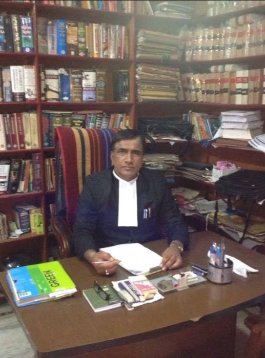
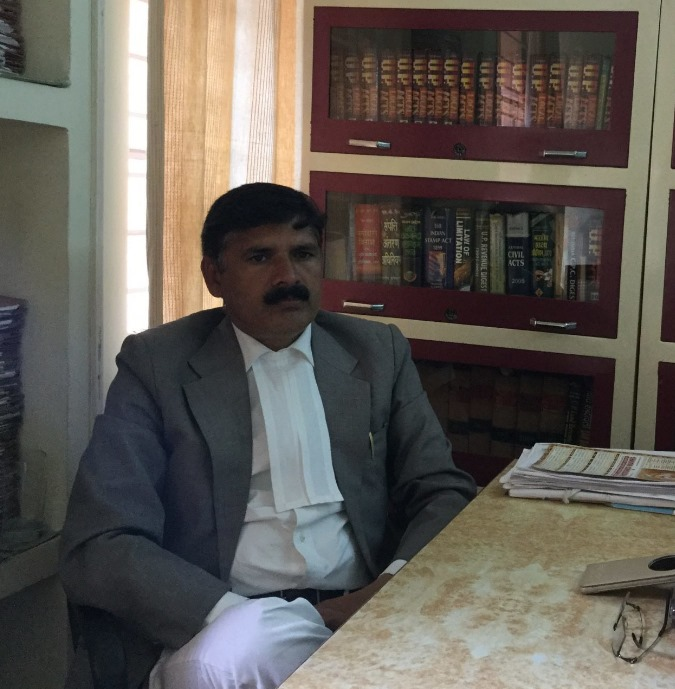

Here's a detailed explanation:
The statement "Option for users to seek legal advice from an expert in case of complex legal issues" means
that within the "AI-powered Legal Documentation Assistant" project, there is a feature that allows users to
access and consult with a human legal expert when they encounter particularly intricate or challenging legal
matters. This feature acknowledges that while the AI system is a valuable tool, there are situations where
human expertise and judgment are indispensable.
Option for users to seek legal advice:
This indicates that the system provides a pathway or a mechanism for users to connect with a qualified legal
professional. This could be in the form of a chat or consultation service where users can communicate
directly with a lawyer.
In case of complex legal issues:
This specifies that the option to seek legal advice is particularly intended for situations that involve
intricate, unclear, or legally challenging matters. It's recognizing that not all legal situations can be
resolved solely with automated document generation, and human expertise may be necessary.
Potential Enhancements:
In-App Consultation Service:
Integrate a chat or video consultation feature directly within the application, allowing users to quickly
and conveniently connect with a legal expert without leaving the platform.
Expertise Matching:
Implement a system that matches users with legal experts based on the specific area of law relevant to their
issue. For example, if a user is dealing with a real estate matter, they would be connected with a real
estate law expert.
Appointment Scheduling:
Provide a scheduling tool that allows users to book consultations at a time that is convenient for both
parties.
Document Upload and Review:
Allow users to upload their generated documents for review by the legal expert, ensuring that they meet all
necessary legal requirements and are appropriate for the specific situation.
Cost Transparency:
Clearly outline any associated costs for seeking legal advice, including consultation fees or charges for
additional services.
Feedback and Rating System:
Implement a system that allows users to provide feedback on their consultation experience. This can help
maintain a high standard of service and provide valuable insights for improvements.
Legal Resource Library:
Include a repository of legal resources, articles, and guides within the application to offer users
additional information and context on common legal issues.
By incorporating these enhancements, the "AI-powered Legal Documentation Assistant" can become a more
comprehensive and valuable tool for users, providing them with a complete legal solution that combines the
benefits of AI automation with the expertise of human legal professionals when needed.

Mr. Roop Chandra Sharma
24 years in business
District Court, Chamber No.- 15, Naveen Bhawan, Meerut City, Meerut - 250002 (Near Western Kutchery Gate)
Mon - Sat
10:00 am - 5:00 pm
Sun - Closed
07947354687
Adv. Shubham Arora
9 Years in Business
Chamber No. 47, First Floor, Ch. Charan Singh Law Chambers Building, Civil Court Compound, Meerut
Kutchery, Meerut - 250003 (Near Family Court)
Mon - Sat
10:00 am - 6:00 pm
Sun
9:00 am - 9:00 pm
07947349943
Adv. MEENAKSHI YADAV
6 Years in Business
Chamber No. 83, Collectrate Compound, Meerut Kutchery, Meerut - 250003 (Near Post Office)
Mon - Sun
Open 24 Hrs
07947290704
 The Legal Insight
The Legal Insight
37 Years in Busines
Chamber No 899, District Sessions Court Raj Nagar District Centre, Raj Nagar Ghaziabad, Ghaziabad - 201002 (Near Hotel Mela Plaza)
Mon - Sun
Open 24 Hrs
9716113377
S P Chaudhary And Associates (advocates & Legal Advisors)
22 Years in Business
R - 9/56, Raj Nagar Ghaziabad, Ghaziabad - 201002 (Near St. Paul School)
Mon - Sat
10:00 am - 6:00 pm
Sun
Closed - Closed
07419873669
Kumar Advocate & Associates
22 Years in Business
Chamber No.819, District Court Compound, Raj Nagar Ghaziabad, Ghaziabad - 201002 (Near Ssc Office)
Mon - Fri
8:00 am - 7:00 pm
Sat - Sun
Closed - Closed
07419638252

Adv. Bhupender Singh Rana
32 Years in Business
Chamber No. 20, Meerut College Road, Kutchery, Meerut - 250001 (Commissnary)
Mon - Sat
10:00 am - 5:00 pm
Sun
Closed - Closed
06384437426
Shanti Legal Consultancy Services
1 Years in Business
5, Baral, Mheroli Road, Kanker Khera, Meerut - 250001 (Near Pani Ki Tanki)
Mon - Sat
10:30 am - 4:00 pm
Sun
Closed - Closed
07947404569